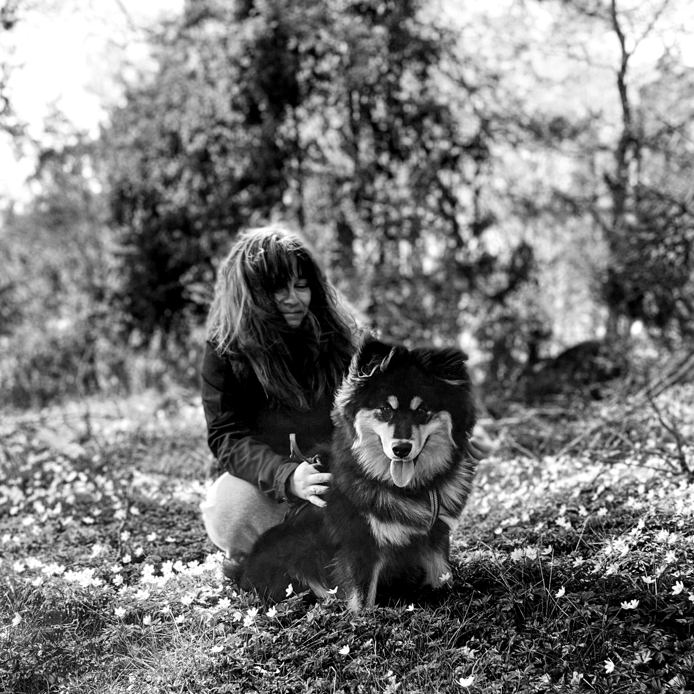
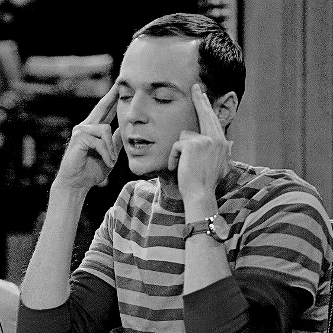
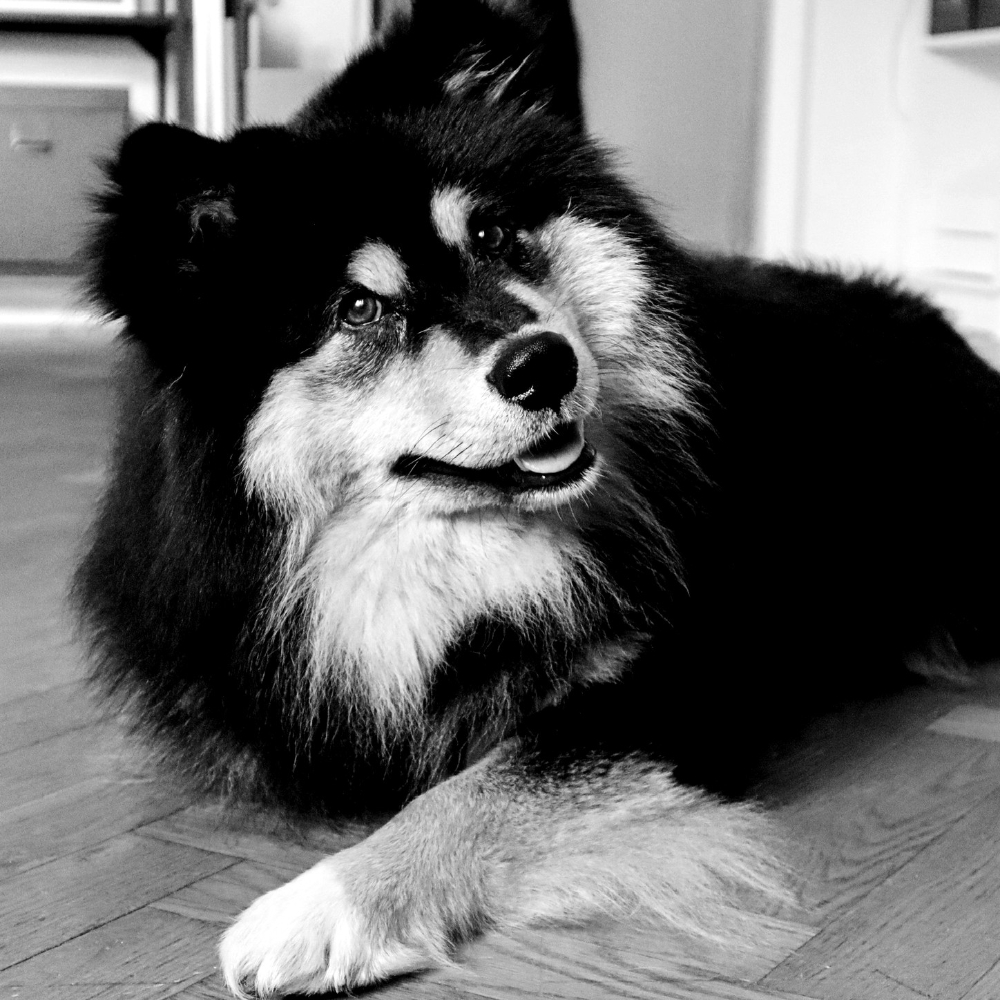

Snabbfakta
Klicka för snabbfakta
- → Född: 6 januari 1994
- → Födelseort: Södertälje
- → Bostadsort: Västervik
- → Stjärntecken: Stenbock
- → Favoritmat: Chiabatta ala Mathilda
OBS! Jag är dessutom relativt cool och charmig också!
Favoritserier
Klicka för favoritserier
- • Big Bang Theory
- "Big Bang Theory" handlar om ett gäng genier, och Penny.
- • How I Met Your Mother
- "How I Met Your Mother" handlar om att Ted går igenom historien om hur han träffade sina barns mamma.
- • Atypical
- I "Atypical" får en lära känna autistiske Sam och hans familj.
Intressen
Klicka för intressen
- • Styrkelyft
- • Digitalt skapande
- • Hundsport
- • Dans
- • Fotografering